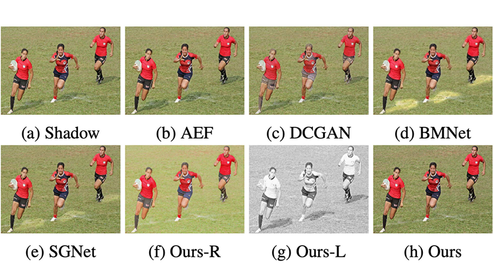
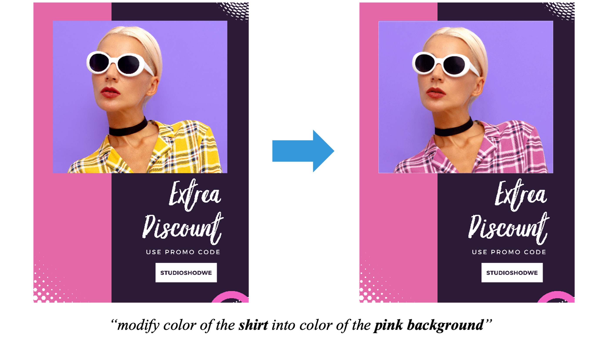

Zhenwei (Zavier) Wang
Research Interests:
- World Model
- 3D Reconstruction
- Video Generation
- 3D Asset Generation
About Me
I am a researcher at Tencent Hunyuan, working in the world model team. I received my Ph.D. degree from the Department of Computer Science, City University of Hong Kong (CityU), under the supervision of Prof. Rynson W.H. Lau and Prof. Gerhard Hancke. I was also a visiting scholar at VCG@Harvard University, advised by Prof. Hanspeter Pfister.
During my Ph.D. studies, I was fortunate to work with Tengfei Wang and Ziwei Liu from Shanghai AI Lab and MMLab@NTU. I was also lucky to closely collaborate with Nanxuan Zhao from Adobe Research. I received my B.Eng. degree from Xiamen University.
I'm interested in generative AI, including world models, video generation, 3D reconstruction, and 3D asset generation.
News
- [Aug. 2025] Three papers accepted to SIGGRAPH Asia 2025. See you in Hong Kong!
- [Aug. 2025] HunyuanWorld 1.0 is released. Check it out!
- [Feb. 2025] One paper accepted to CVPR 2025.
- [Feb. 2025] One paper accepted to ICLR 2025. See you in Singapore!
- [Apr. 2024] One paper accepted to SIGGRAPH 2024. See you in Denver!
- [Dec. 2023] One paper accepted to AAAI 2024.
- [Apr. 2023] One paper accepted to SIGGRAPH 2023 (journal track).
Experience
-
Researcher, Tencent Hunyuan3D, World Model Team08.2025 - Present
-
Research Intern, Tencent Hunyuan3D, World Model Team04.2025 - 07.2025
-
Visiting Scholar, Harvard University, VCG Group10.2024 - 02.2025
-
Research Intern, Shanghai AI Laboratory, 3D AIGC Team09.2023 - 10.2024
Open-Source Projects
|
Technical Report
|
HunyuanWorld 1.0: Generating Immersive, Explorable, and Interactive 3D Worlds from Words or PixelsTencent Hunyuan3D, July 2025 Immersive and editable 3D scene generation from images or texts. |
|
Technical Report
|
HunyuanWorld-1.1: Technical ReportTencent Hunyuan3D, October 2025 A fully open-source 3D world reconstruction model with any input and any output within a unified and feed-forward framework. |
|
Technical Report
|
HY-World 1.5: A Systematic Framework for Interactive World Modeling with Real-Time Latency and Geometric ConsistencyTencent Hunyuan3D, December 2025 The first Open-Source world model with real-time latency, long-term memory, interactive control, and long-horizon generation. |
Selected Publications
(*equal contribution, ^intern, †corresponding author)
|
Preprint
|
WorldPlay: Towards Long-Term Geometric Consistency for Real-Time Interactive World Modelingpreprint, December 2025 Real-time interactive world model with long-term memory. |
|
Preprint
|
WorldMirror: Universal 3D World Reconstruction with Any-Prior Promptingpreprint, October 2025 Universal and feed-forward 3D reconstruction with any input and any output. |
|
SIGGRAPH Asia 2025
|
StyleSculptor: Zero-Shot Style-Controllable 3D Asset Generation with Texture-Geometry Dual GuidanceProc. ACM SIGGRAPH Asia, December 2025 Joint geometry and texture style-guided 3D asset generation in a training-free manner. |
|
SIGGRAPH Asia 2025
|
Voyager: Long-Range and World-Consistent Video Diffusion for Explorable 3D Scene GenerationACM Trans. on Graphics (Proc. ACM SIGGRAPH 2025, Journal), December 2025 Long-range 3D world exploration with RGB-D(epth) video diffusion. |
|
SIGGRAPH Asia 2025
|
Shape-for-Motion: Precise and Consistent Video Editing with 3D ProxyProc. ACM SIGGRAPH Asia, December 2025 Diverse and precise video object manipulation with 3D proxy and diffusion rendering. |
|
CVPR 2025
|
MAGE: Single Image to Material-Aware 3D via the Multi-View G-Buffer Estimation ModelCVPR, June 2025 A G-buffer estimation model for single image to high-quality material-aware 3D reconstruction. |
|
ICLR 2025
|
Phidias: A Generative Model for Creating 3D Content from Text, Image, and 3D Conditions with Reference-Augmented DiffusionICLR, April 2025 A 3D diffusion model with RAG, supporting 3D generation from text, image, and existing 3D models. |
|
SIGGRAPH 2024
|
ThemeStation: Generating Theme-Aware 3D Assets from Few ExemplarsProc. ACM SIGGRAPH, August 2024 Generate a gallery of 3D assets with consistent themes from a few exemplars. |
|
AAAI 2024

|
Recasting Regional Lighting for Shadow RemovalAAAI, February 2024 Shadow removal approach that corrects degraded textures in shadow regions conditioned on recovered illumination. |
|
SIGGRAPH 2023

|
Language-based Photo Color Adjustment for Graphic DesignsACM Trans. on Graphics (Proc. ACM SIGGRAPH 2023, Journal), August 2023 Present LangRecol, a novel language-based approach for recoloring photos in graphic designs. |